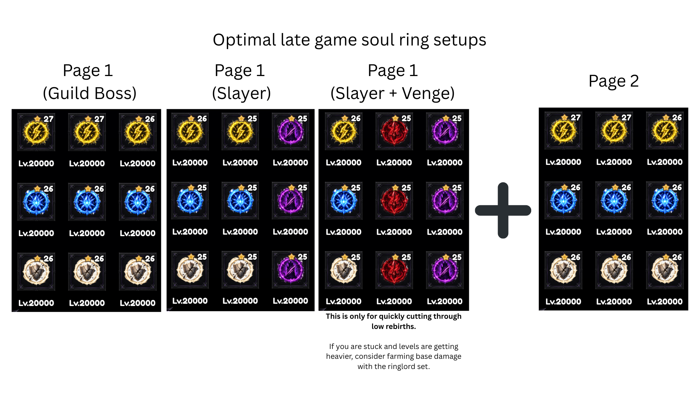

Evolutions F2P / non-DPS / Fresh Player
The recommended weapon evolution path if you're free-to-play or not focused on pure DPS. Don't skip ahead — each stage lists the damage multiplier and the checkpoint you need before evolving further.
- Main line: Lv.1800 scythe → Lv.1604 → Lv.1600/17 → Evolution 2 (49x dmg) → Tier 5 guild evolution (1M attack).
- Do not proceed past Evolution 2 until it's fully achieved.
- Minor evo branch is separate and only needs a min level 10 thunder sword; each evolve costs 500–1000 hours of stones.
- Use a random Base Attack piece before Vanguard is evolved — don't over-invest, 1 star is enough.

Ringlord Set
A support/farming set, not a damage set — don't build damage stats on it.
- 2-piece: Inactive Soul Ring pages grant 50% of their effects.
- 4-piece: Increases Ringlord effects by 500%.
- Ringlord Effect is the only main stat that matters; 1x Revive Attack relic at high stars is enough.
- Use Vengeance with Ringlord to farm base attack.

Optimal Late-Game LB Setup
Thunder/Lightning-build gear: Thunder Doom, Seventh Omen (unique), and 3x Ringlord, paired with the Doomstorm 5-piece set.
- 2-piece: +3 to the maximum repeat count of Thunder Apotheosis.
- 4-piece: Thunder Apotheosis multiplies each repeated strike's damage by x3.
- Relic priority: x2 Critical Damage, Final Damage, Thunder Damage, Shield Damage Multiply, +1 of the above.
- Build Thunder Damage last — but keep it if you get a lucky roll.
- Keep 1x Thunder Pact for progression.

Optimal Skull Set Setup 20M+ revives needed
Abyss Walker, Weapon Sigil, Seventh Omen (unique), and 2x Ringlord, combined with the Death King + Gravesmith 10-piece set.
- 2-piece: Each Death King level increases Skull damage by 100%.
- 2-piece: Converts Weapon Sigil bonuses into independent damage.
- Relic priority: x2 Critical Damage, Final Damage, Skull Damage, Shield Damage Multiply, +1 of the above.

Skull vs. LB: Revive Count Thresholds
Which build to run depends on your revive count and whether you're farming Guild or Tower content.
- Guild: 0 revives → no potions/codex needed. 20M–40M → crit/attack potions + Codex. 20M–40M+ → add Lv.2800 weapons too.
- Tower: 20M–45M revives across every stage — Codex, then Codex + Lv.2800 weapons.

Optimal Late-Game Soul Ring Setups
Page 1 loadouts differ by target content; Page 2 is a shared general-purpose page.
- Guild Boss: all Lv.20000 lightning/frost/shield rings.
- Slayer: swaps in venge-purple rings at 25★ for faster clears.
- Slayer + Venge: for quickly cutting through low rebirths only.
- If progress stalls and levels get heavy, farm base damage with the Ringlord set instead.

How to Upgrade Your Relics
Three ways to modify a relic: Rerolls, Resets, and Hellfire.
- Rerolls: change every stat, redistribute stars randomly, 10% chance to add an extra star (max 5).
- Resets: reset relic level to 0 but keep the main stat; stars are removed and re-rolled from scratch.
- Hellfire: reduces relic level by 4, which in practice removes one random star (needs a Devil's Horn to push 5★ → 6★).
- 5★ and under relics should only use Resets.
- Priority for necklace-type relics: Necklace > Codex > Core.

Challenge HP Reduction — Is It Any Good?
Short answer: yes, but build it last.
- 5★ relics → ~3.27x damage increase in Tower & Hell Road (≈ under 3 tower levels).
- 6★ relics → ~144x damage increase in Tower & Hell Road (≈ 22 tower levels).
- It should not be your first 6★ stat — other stats net a 64x damage increase (≈18 tower levels) that's also usable outside the tower, which outweighs Challenge HP Reduction even accounting for the extra ascension it grants.